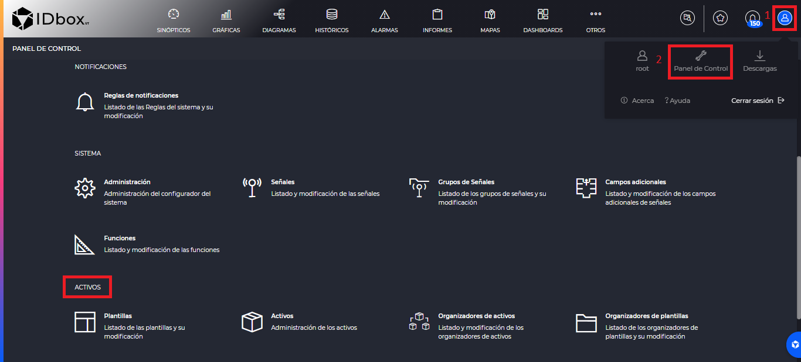
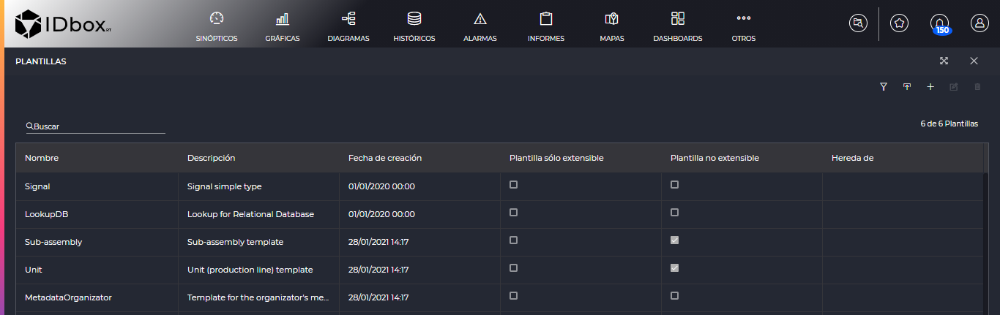
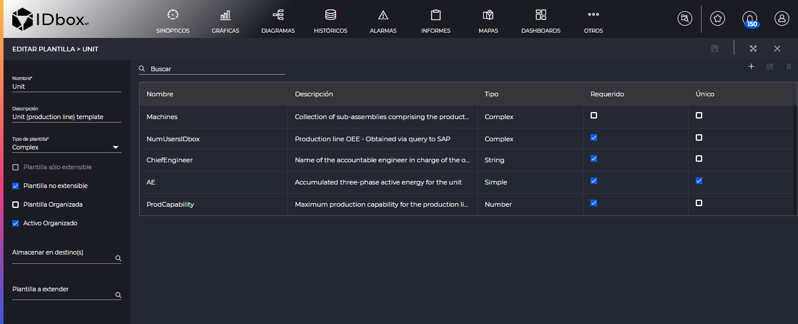
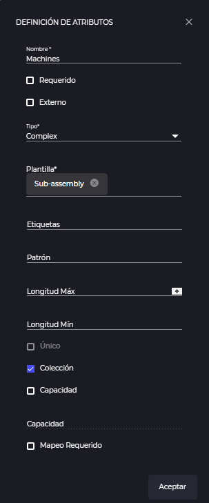
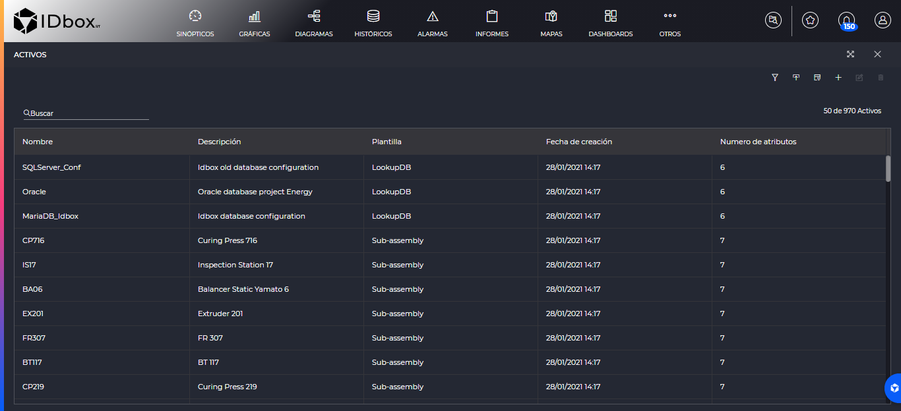
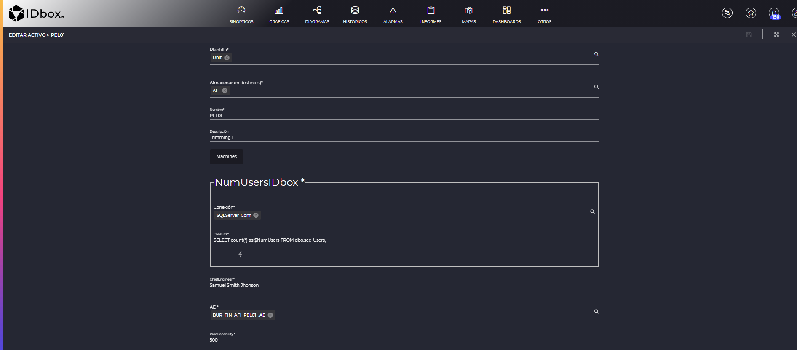
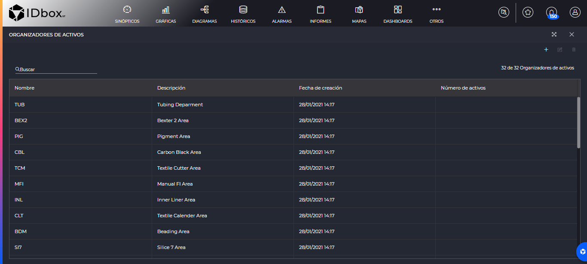
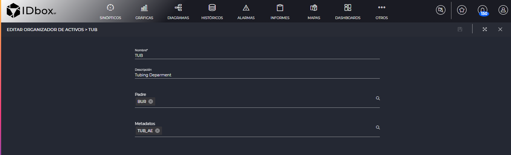
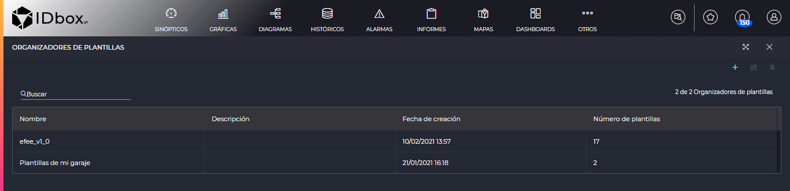
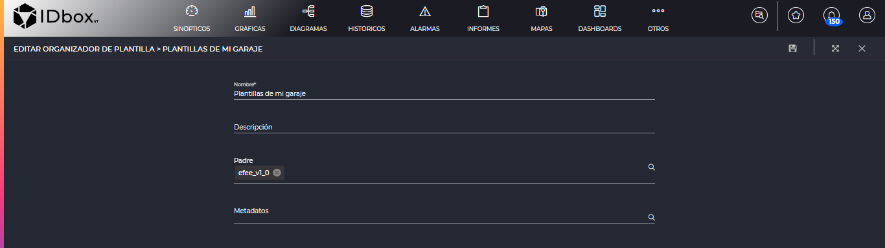

ASSETS
- 1 Introduction
- 2 Asset templates
- 2.1 Definition of attributes
- 3 Assets
- 4 Template organizers
- 5 Asset organizers
- 6 Bulk loading
1. Introduction
The “Assets” section of the control panel contains the tools for managing the asset inventory. From here you can register asset templates, assets, template organizers and asset organizers. In this way we can manage all IDboxRT asset inventory operations.
This section is accessed from the control panel.

In each section we will find a list with the elements registered in the corresponding block.
In all sections we will find on the left a search engine and on the right among the options we will find an add button , that will allow us to add a new element to that section. Also if we select a record it will allow us to edit it using the edit button , or delete it using the delete button .
2 Asset templates
As we enter the section we will find the list with the asset templates.

The filter button , will allow us to filter by template extensibility (only pull out extensible ones, only non-extensible ones, etc.) and/or the template type (“Complex”, “Lookup” o “Metadata”).
In addition, we have a button to import templates which is explained in section Bulk loading.
Once we add or edit a template, we will enter the template definition section.

A template is a data structure that will define the attributes that an asset has. We can distinguish the following fields:
- Name: Name that we will give to the template.
- Description: Description of the template.
- Type of template: It may be of one of the following types:
- Complex: Mainly used to define a real asset by means of properties (attributes). These can be real assets of the company, infrastructure, machines, etc. The Complex template allows you to create a hierarchy (relate parent assets to child assets).
- Metadata: It is the definition of a data structure that when defined will complement the data of an organizer. Metadata templates can only be associated to organizers.
- Lookup: It will not appear to select in this combo because they cannot be created by the user. It is a data structure that defines the necessary attributes so that the lookup asset that is created based on this template can make a connection to a system external to the IDboxRT inventory. It is considered external system to the IDboxRT inventory: the backend of the IDboxRT or a third system. These connections will make possible the execution of queries defined at the level of a complex asset or a metadata asset.
- Simple: It will not appear for us to select in this combo because they cannot be created by the user. An example would be the “Signal” template, which will indicate that this field contains a reference to an IDboxRT signal. These templates are defined with the system.
- Extensible template only: Option available for the Complex template. Checking it makes it possible for the attributes of this template to be inherited in another template. Extensible-only templates by themselves do not allow to create assets, since they describe something partial or abstract.
- Non-extensible template: Option available for Complex templates. If checked, it indicates that no other template can inherit from it. A non-extensible template can inherit the attributes defined in an extensible-only template. The non-extensible template allows to create assets.
- Organized template: Indicates whether it is mandatory to save the template in a folder hierarchy known as a template organizer. Checking “Organized template” will make the “Store in destination(s)” field mandatory.
- Organized asset - assets to be registered based on this template will have the field “Store in destination(s)” marked as mandatory.
- Store in destination(s): Used to indicate the organizer(s) in which this template will be stored.
- Template to extend: Allows to import, inherit, the attributes defined in a “Template only extensible”. These attributes to be inherited will be shown only in the asset registration form.
In the central part of the form the template attributes will be displayed. A template that has an active one cannot be modified. We will be able to search among the existing ones by means of “Search”.
We can create a new attribute by clicking on the . Selecting an existing attribute will allow us to edit it by means of the edit button , or delete it using the delete button .
2.1 Definition of attributes
Once we edit or add an attribute, we will have the following screen to define the attributes.

The attributes are composed of the following fields: * Name: Name of the attribute that will be shown when registering an asset. * Required: Indicates if the attribute will be required when registering the asset. * External: At the IDbox inventory level it is an informative field. It is used to give a value to the information, to know that what this field stores in the asset form is in an external system, it is not in the IDboxRT inventory. * Type: Indicates the type of data that the attribute will accept in the asset. The following types are possible:
- String: Allows text type characters (alphanumeric).
- Integer: Allows only integers.
- Decimal: Allows decimal numbers. If the user will enter an integer number, it will be saved internally as decimal.
- Date: Allows data in date format.
- DateTime: Allows data in date and time formats.
- Complex: Selecting this option will display the Template field where you can choose between all Complex or Lookup templates. Selecting a Complex template will allow the creation of a hierarchy of parent - child assets. In the parent asset registration form, in the field corresponding to this attribute, the previously created child assets will be selected. Selecting a Lookup template, in the asset registration form, in the field corresponding to this attribute, it will be possible to select a previously registered lookup asset and define the query to be performed.
- Simple: As with the Complex type, the “Templates” field will be displayed in the form, allowing access to the simple Signal template. When selecting the “Signal” template in the Attribute Definition form, the External field will be checked automatically.
- Tags : At the attribute level, one or more tags can be defined. A tag is an expression consisting of a lowercase text preceded by # (e.g. #capacity). Tags will allow to display, in Explorer, the value of the attribute where they have been defined. Clicking on Tags opens the “Enter or select a tag” form provided with a search engine in which you have to type the tag to assign. If the tag is not already created in the application, click OK. By accepting, the tag will be created and associated to the edited attribute. If the tag exists, it will be selected from the list returned by the search engine. It is not recommended to add tags to attributes that have a collection. The tags of these attributes cannot show the values of a collection.
- Pattern: This is the regular expression that defines the format of the data to be entered in the corresponding field of the asset (only capital letters, only letters, spaces, NIF format, etc.).
- Default value: By checking this check you will be able to indicate in the field with the same name the value that will be shown by default in the asset registration. The format of this value will depend on the type of attribute (string, integer, decimal, date, datetime).
- Max Length: Defines the maximum number of characters allowed for this attribute in the asset form.
- Min Length: Defines the minimum number of characters allowed for this attribute in the asset’s form.
- Unique: Assets, as long as they are from the same template, cannot repeat the same value for the field defined as unique. The uniqueness applies to each of the inheritance hierarchies; it is per template.
- Collection: Indicates that instead of being a single value, the asset will have a collection of values of the type indicated in the “Type” field. Checking this option will enable the “Capacity” and “Mapping Required” buttons.
- Capacity - defines the mandatory number of values, elements that the collection will have. If no number is specified in Capacity the collection will have as many values, elements as the user needs.
- Mapping Required - is an identifier for each element in the collection. This identifier will be displayed only in the asset form; it will not be displayed when viewing the asset in Explorer. Checking this option will bring up a list on the right for us to give an identifier to each of the values. One row will be shown for each capability and we will be able to add more or delete them using the Add buttons and eliminate . In addition, if we enter a text in “Autocomplete Mapping”, it will autocomplete all identifiers with the text we have entered and an auto-incremental numeric (e.g. with the text “Signal”, it will write “Signal 1”, Signal 2", etc.).
Save the entire template by clicking on the save button on the toolbar .
3 Assets
When entering this section we will find the list of the system’s assets.

In addition, we will have the filter button , which will allow us to filter by asset name and/or template type (“Complex”, “Lookup” or “Metadata”).
On the other hand, we have the active import buttons and download templates which are explained in the section Bulk Loading.
When we edit or create an asset we will enter the asset editing screen.

In this screen we will have a form that will have a common part for all the assets and then a part that will depend on what we have defined in the asset template. How each field will look like is explained in the section Asset Templates. For example, if we have a field of type Integer defined in the template, this field will appear here to enter an integer.
In the case of the common part, the fields are as follows: * Template: Indicates the template by which this form will be generated. The attributes defined in that template are the ones we will see here. * Store in destination(s): Indicates the organizers where the asset will be. * Name: The name of the asset. * Description: A description for the asset.
It is worth noting the display of a Lookup type field. In the case of the image above, the “NumUsersIDbox” field is of Lookup type. In it we see the selection of a Lookup type asset in the “Connection” field, the query to be performed in the “Query” field and then an execute button in which we will run the “Query” against the external system defined in the “Connection” and it will show us the resulting value.
In the case that the attributes are not simple and are of type “Collection”, a button will appear that will open another window to enter those values. In the example of the attribute in the screenshot above, “Machines” is of type “Collection”.
The asset will be saved once we click on the save button in the toolbar .
4 Template organizers
Here you will find the list of template organizers.

When editing or registering an organizer, you will enter the following screen.

The fields are as follows: * Name: Name of the organizer. * Description: Description of the organizer. * Parent: Organizer that in the hierarchy, will be the parent of this one. * Metadata: Used to select a metadata template for the purpose of displaying information at the organizer level.
By clicking on the save button on the toolbar , we will save the template organizer.
5 Asset organizers
The first thing you will find is the list of asset organizers.

If we add or edit one we will enter the edit screen of an asset organizer.

The fields are as follows: * Name: Name of the organizer. * Description: Description of the organizer. * Parent: Organizer that in the hierarchy, will be the parent of this one. * Metadata: Used to select a metadata template in order to display information at organizer level.
The asset organizer will be saved when we click on the save button in the toolbar .
6 Bulk loading
Bulk loading modes:
- Import from excel with templates: Imports the inventory system templates from the excel file with the definition. You will find it in the import button from the section Asset Templates.
- Export template for assets: Download the excel format that has to be followed to insert assets. This button is located in the section Assets.
- Import excel file with assets: Once the excel file with the system assets is generated, it is imported to the system. We will find the button in the section Assets.